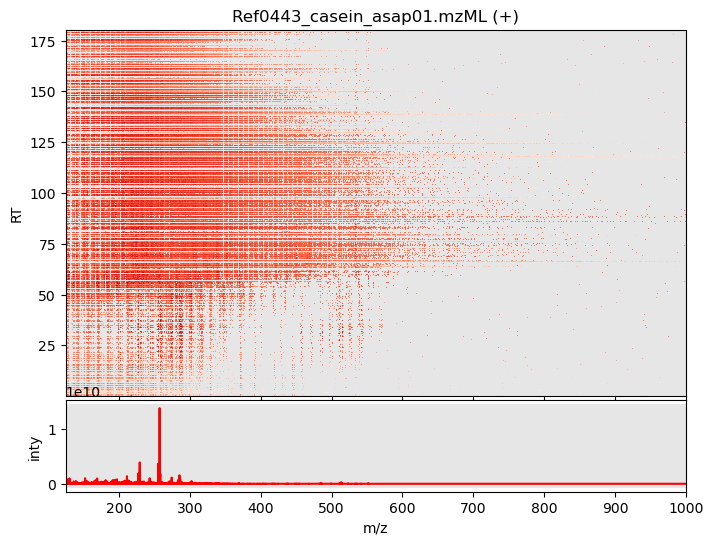

from kendrick import read_mzmlExploring half a million molecules
High precision averaging of jittering masses
Reading an .mzML file
First step is to read an mzML file containing (already centroided) ASAP-HRMS data. For this we will use the powerful and well documented python package pyopenMS. The data can be loaded into a positive and a negative mode dataframe as with the read_mzml() function.
mzml_file = '/home/frank/Work/DATA/kendrick-data/Ref0443_casein_asap01.mzML' # TODO: create download function
df_pos, df_min = read_mzml(mzml_file)Let’s focus on the positive mode data for now. Here is what the first and last rows of the dataframe looks like.
df_pos| RT | mz | inty | |
|---|---|---|---|
| 0 | 0.236683 | 125.023285 | 10221.680664 |
| 2 | 0.236683 | 125.059830 | 81648.109375 |
| 4 | 0.236683 | 125.096230 | 261987.234375 |
| 6 | 0.236683 | 126.055168 | 6278.937500 |
| 8 | 0.236683 | 126.091637 | 8720.198242 |
| ... | ... | ... | ... |
| 556990 | 180.309784 | 546.237732 | 35105.105469 |
| 556992 | 180.309784 | 548.254578 | 52922.070312 |
| 556994 | 180.309784 | 596.266724 | 100884.796875 |
| 556996 | 180.309784 | 610.248840 | 50182.472656 |
| 556998 | 180.309784 | 722.359741 | 28877.074219 |
278500 rows × 3 columns
Inspecting the df_pos dataframe we find 278500 rows with three columns: 1) RT retention time, 2) mz mass per electrical charge, and 3) inty number of ions. From the first column one can see that this experiment lasted 180.3 seconds.
As we will see, m/z values for identical molecules are slightly jittered due to limited instrumental precision. In order to determine the abundance of different molecules present in the sample, we now need to create time averaged centroided m/z values. This can be achieved by 1) first binning the data in a histogram, 2) then Gaussian smoothing the histogram and locating the peaks. These steps are implemented in the functions histogram() and get_time_averaged_centroids().
Next step is to explore the data in an interactive visualization. In order to plot half a million data points in a single plot we need to import a special function interactive_plot(). This function makes heavily use of a powerful python package datashader that is designed for fast plotting huge numbers of data points.
from kendrick import histogram, get_time_averaged_centroids, interactive_plotmz_hist = histogram(df_pos)
mz_centroids = get_time_averaged_centroids(mz_hist)
interactive_plot(df_pos, mz_hist, mz_centroids)
..

<Figure size 640x480 with 0 Axes><Figure size 640x480 with 0 Axes>interactive_plot
interactive_plot (df, mz_hist, mz_centroids)
Create interactive plot for dataframe df.
get_time_averaged_centroids
get_time_averaged_centroids (mz_hist_w_xy)
Get peaks (centroids) from histogram.
histogram
histogram (df)
Create intensity weighed histogram.
read_mzml
read_mzml (mzml_file)
Read mzml_file.
Returns positive and negative mode dataframes df_pos and df_min.